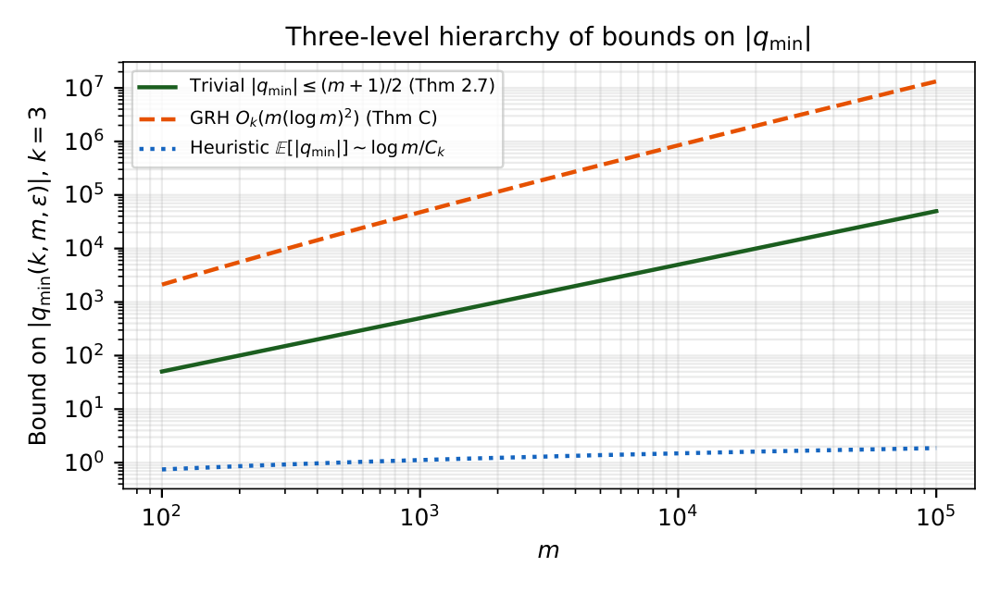
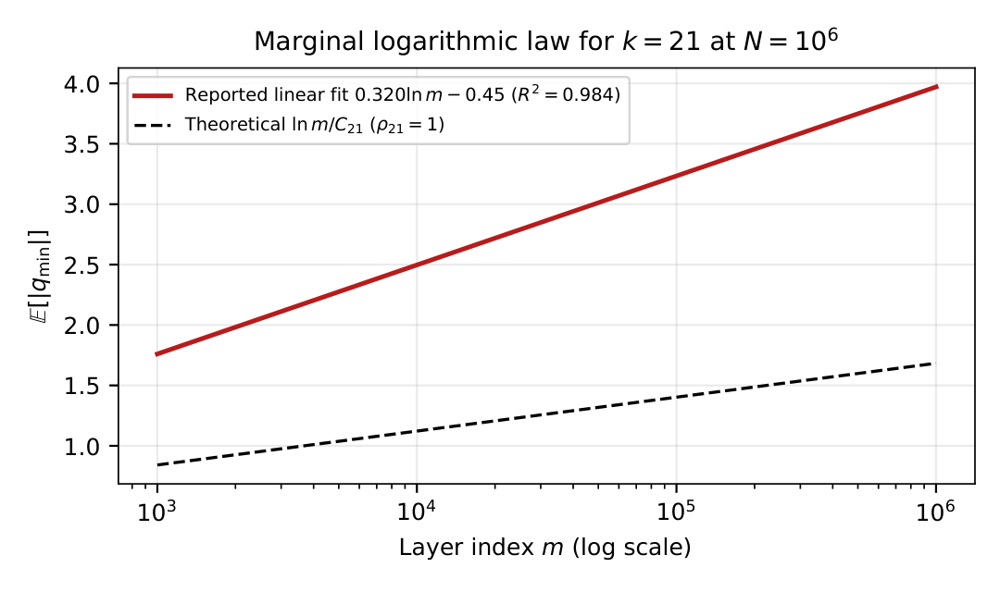
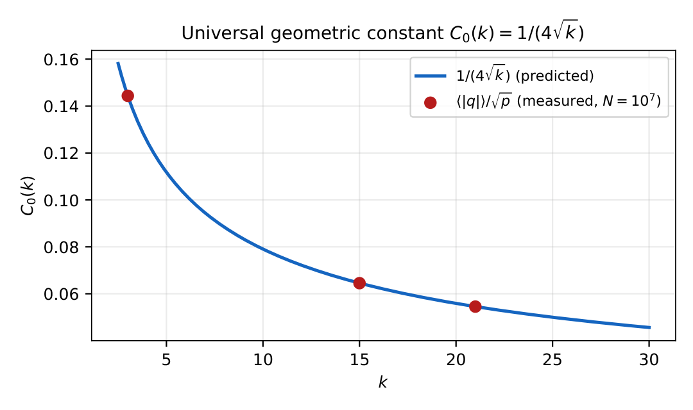
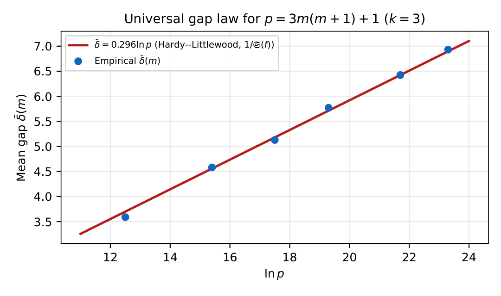
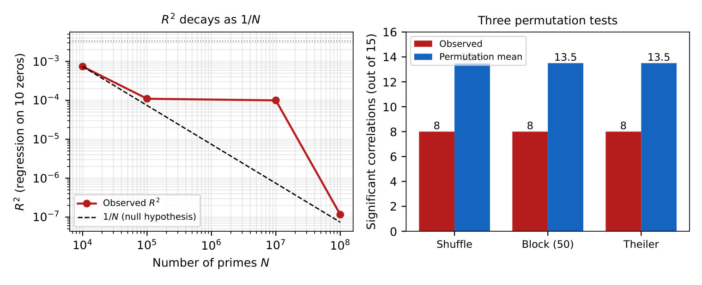
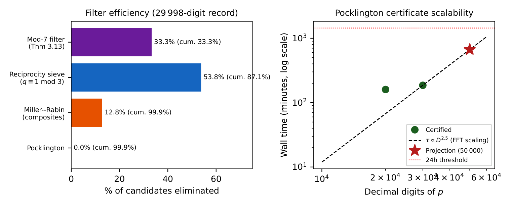

Clé épistémique (à lire en premier). Quatre niveaux de certitude sont signalés tout au long du texte :
\(\blacksquare\)
RIGOUREUX : inconditionnel, démontré à partir de
théorèmes classiques.
\(\blacksquare\)
CONDITIONNEL : établi sous des hypothèses
explicites (GRH, RH, Bateman–Horn).
\(\blacksquare\)
HEURISTIQUE : prédit sous des heuristiques
standard et validé numériquement.
\(\blacksquare\)
NÉGATIF : invalidation rigoureuse d’une
affirmation antérieure (y compris de l’auteur).
Aucun résultat n’est présenté comme une avancée inconditionnelle majeure.
Introduction
Motivation et programme
Ce manuscrit entreprend une exploration théorique de la distribution des premiers selon une approche paramétrique. Nous réécrivons les premiers sous une forme paramétrique doublement indexée afin d’analyser les structures, régularités et phénomènes de concentration observables dans des cadres paramétriques spécifiques — non au sens d’une périodicité stricte, mais comme l’existence possible de contraintes arithmétiques. Nous nous concentrons sur ce qui peut être démontré et sur les observations formulables dans un cadre rigoureux. Le manuscrit ne prétend trancher aucune question classique ; il ouvre une direction complémentaire d’étude.
L’amorce est élémentaire : tout premier \(p>3\) vérifie \(p\equiv\pm1\pmod6\), c.-à-d. \(p\) se situe à distance signée \(1\) du multiple de \(6\) le plus proche. La famille étudiée ici, \[\begin{equation} \label{eq:family} p_{k,m,\varepsilon,q}=km(m+1)+\varepsilon+2kq, \end{equation}\] généralise cela en remplaçant \(6\) par \(2k\), la variable linéaire par le nombre pronique \(m(m+1)\), et en rendant explicite le décalage \(q\). À \(m,\varepsilon\) fixés, [eq:family] est une progression arithmétique de raison \(2k\), à laquelle le théorème de Dirichlet s’applique inconditionnellement. Le décalage minimal \(q_{\min}(k,m,\varepsilon)\) — l’entier de plus petite valeur absolue rendant \(p\) premier — est l’objet central.
Trois couches décrivent \(q_{\min}\) : la couche marginale (taille de \(|q_{\min}|\) en fonction de \(m\), §5), la couche conditionnelle (loi de \(|q|\) sachant \(m\), §§4–5) et la couche modulaire (\(q_{\min}\bmod\ell\), §§3–4), complétées par une quatrième couche computationnelle (§§3,7).
La famille paramétrique
On fixe \(k\in\mathbb{N}^{\ast}\) admissible, c.-à-d. \(\gcd(\varepsilon,2k)=1\) pour au moins un \(\varepsilon\in\{\pm1\}\) ; on pose \(E_k:=\{\varepsilon\in\{\pm1\}:\gcd(\varepsilon,2k)=1\}\). Comme \(\gcd(\pm1,n)=1\), \(E_k=\{-1,+1\}\) pour tout \(k\ge1\). La base hexagonale généralisée est \(H^{(k)}_m:=km(m+1)+1\). Pour \(k=3\), \(\{H^{(3)}_m\}=\{7,19,37,61,91,127,\dots\}\) sont les nombres hexagonaux centrés (OEIS A003215), points du réseau \(\mathbb{Z}[\omega]\), \(\omega=e^{2\pi i/3}\).
Résultats principaux
La synthèse épistémique complète est la Table 1 ; les preuves occupent les §§3–6.
| Couche | Quantité | Loi principale | Statut |
|---|---|---|---|
| Marginale | \(\mathbb{E}[|q_{\min}|]\) | \(\sim \log m/C_k\) | Heuristique |
| Conditionnelle | \(\mathbb{E}[|q|\mid m]\) | \(=m/4+O((\log m)^2/\sqrt m)\) | Conditionnel |
| Modulaire | \(P(q_{\min}\equiv r)\) | \(=\pi_{\mathrm{perm}}(r)/(\ell-1)+O(N^{-1/2})\) | Conditionnel |
| Modulaire (\(\ell\mid 2k\)) | \(p\bmod\ell\) | \(\equiv\varepsilon\) exactement, indép. de \(q\) | Rigoureux |
| Modulaire (\(\ell\mid 2k\)) | \(q_{\min}\bmod\ell\) | \(F_N(r)=1/\ell+O(N^{-1/2})\) | Heuristique |
| Computationnelle | \(p=3m(m+1)+1\) | certificat Pocklington | Rigoureux |
| Analytique-négatif | \(A_N(\gamma)\) | \(\to0\) (taux \(X^{-\delta}\) cond.) | Rigoureux |
Théorème 1 (Rigoureux ; axe modulaire dégénéré, Théorème 17). Soit \(k\in\mathbb{N}^{\ast}\) et \(\ell\) un premier divisant \(2k\). Alors pour tout \(\varepsilon\) admissible et tous \(m,q\), \[p_{k,m,\varepsilon,q}\equiv\varepsilon\pmod\ell,\] indépendamment de \(q\). L’axe modulaire dégénéré est fixé exactement.
Théorème 2 (Rigoureux ; Théorème 22). Pour tout \((a,b)\in(\mathbb{N}^{\ast})^2\) tel que \(p:=3m(m+1)+1\) avec \(m=2^a3^b-1\) soit premier, le critère de Pocklington–Lehmer fournit un certificat inconditionnel avec \(F=2^a3^{b+1}>\sqrt p\). L’algorithme a produit un premier \(p^{\ast}=3m^{\ast}(m^{\ast}+1)+1\), \(m^{\ast}=2^{19435}\cdot3^{19173}-1\), de \(29\,998\) chiffres décimaux, certifié inconditionnellement en \(3\)h\(06\)min sur matériel grand public.
Théorème 3 (Rigoureux, inconditionnel ; Théorème 48). Pour tout \(\gamma\in\mathbb{R}\) fixé, l’amplitude de régression \(A_N(\gamma)=\tfrac{2}{\pi(X)}\big|\sum_{p\le X}(\{\sqrt{p/3}\}-\tfrac12)\,p^{-i\gamma}\big|\) vérifie \(A_N(\gamma)\to0\) inconditionnellement (avec une économie de puissance explicite \(X^{-\delta}\) sous une estimation Type II standard). Aucune ordonnée de \(\zeta\) ne porte de signal linéaire survivant.
Théorème 4 (Conditionnel sous GRH ; Théorème 34). Sous GRH, pour chaque \(k,\varepsilon\) admissibles fixés, \(|q_{\min}(k,m,\varepsilon)|=O_k(m(\log m)^2)\).
Théorème 5 (Conditionnel sous H1+GRH+H3 ; Théorème 36). Pour \(k=3\), \(\varepsilon\in\{\pm1\}\), \(\mathbb{E}[|q|\mid m]=\tfrac{m}{4}+O((\log m)^2/\sqrt m)\).
Théorème 6 (Conditionnel sous RH ; Théorème 50). Sous RH, l’empreinte de \(\zeta\) par premier sur l’occupation des couches est \(\ll p^{-1/4}(\log p)^2\) (variance de Selberg).
▪ HEURISTIQUE Lois heuristiques. \(\mathbb{E}[|q_{\min}|]\sim\log m/C_k\) (\(R^2=0.984\), \(N=10^6\)) ; \(C_0(k)=1/(4\sqrt k)\) stable à \({<}0.02\%\) sur \(3\le k\le29\) ; et \(q_{\min}\bmod\ell\) empiriquement équidistribué pour \(\ell\mid2k\).
▪ NÉGATIF Résultat négatif (Prop. 46). À \(N=10^8\) : \(R^2=1.16\times10^{-7}\), \(z=-2.20\sigma\) ; trois tests de permutation confirment l’absence de signal spectral de \(\zeta(s)\) dans \(Q(r)\).
Ce qui est, et n’est pas, revendiqué
Le manuscrit (i) démontre une loi structurelle rigoureuse (l’axe dégénéré exact) ; (ii) établit deux piliers authentiquement inconditionnels — le record Pocklington constructif (Théorème 22) et l’annulation analytique-négative du signal \(\zeta\) (Théorème 48) ; (iii) établit trois théorèmes conditionnels (C, D, E) sous GRH/Bateman–Horn et une borne conditionnelle sur l’empreinte \(\zeta\) (Théorème 50) sous RH ; (iv) valide trois lois heuristiques à \(N\in\{10^6,10^7,10^8\}\). Il ne revendique aucun progrès inconditionnel sur les problèmes classiques (barrière de parité, PNT uniforme à \(N^{1/2}\), RH), et \(C_0(k)=1/(4\sqrt k)\) est une identité géométrique, non un invariant mystérieux.
Une correction de rigueur.
Une version antérieure énonçait, comme « Théorème A », que \(q_{\min}\) lui-même serait uniformément distribué modulo \(\ell\) pour \(\ell\mid2k\), par réduction à Bombieri–Vinogradov. Cette réduction est invalide : comme tous les premiers de la famille vivent dans l’unique classe \(\varepsilon\bmod\ell\), la distribution de \(q_{\min}\bmod\ell\) est gouvernée par la position du premier nombre premier de chaque progression, et non par Bombieri–Vinogradov. L’équidistribution empirique ne survit que comme heuristique (Observation 18). Détecter et reclasser cela relève de la discipline de la clé épistémique.
La famille paramétrique : structure et propriétés élémentaires
Définition 7 (Triplet canonique). Étant donnés un premier \(p>k+1\) et \(k\in\mathbb{N}^{\ast}\), le triplet canonique est l’unique \((m,\varepsilon,q)\in\mathbb{N}^{\ast}\times E_k\times\mathbb{Z}\) avec \(p=km(m+1)+\varepsilon+2kq\) et \(|q|\) minimal. On pose \(q_{\min}(k,m,\varepsilon):=q\).
Proposition 8 (Rigoureux). Pour \(k=3\), le signe \(\varepsilon\) du triplet canonique d’un premier \(p>3\) est déterminé par \(p\bmod6\) : \(p\equiv1\pmod6\Leftrightarrow\varepsilon=+1\), \(p\equiv5\pmod6\Leftrightarrow\varepsilon=-1\).
Proof. Pour \(k=3\), [eq:family] s’écrit \(p=3m(m+1)+\varepsilon+6q\). Comme \(m(m+1)\) est pair, \(3m(m+1)\equiv0\pmod6\), donc \(p\equiv\varepsilon\pmod6\) ; les classes premières à \(6\) sont \(\{1,5\}\equiv\{+1,-1\}\). ◻
Théorème 9 (Rigoureux ; infinitude). Pour tous \(k\in\mathbb{N}^{\ast}\), \(\varepsilon\in E_k\), \(m\in\mathbb{N}^{\ast}\), l’ensemble \(\{p_{k,m,\varepsilon,q}:q\in\mathbb{Z}\}\cap\mathbb{P}\) est infini.
Proof. À \((k,m,\varepsilon)\) fixés, [eq:family] est une progression arithmétique en \(q\) de raison \(2k\) et de premier terme \(km(m+1)+\varepsilon\), avec \(\gcd(2k,km(m+1)+\varepsilon)=\gcd(2k,\varepsilon)=1\). Le théorème de Dirichlet s’applique. ◻
Théorème 10 (Rigoureux ; borne supérieure). Pour tout premier \(p>k+1\) et tout \(k\) admissible, \(|q_{\min}(k,m,\varepsilon)|\le\tfrac{m+1}{2}\).
Proof. Il existe un unique \(m\) avec \(km(m+1)+\varepsilon-k(m+1)<p\le km(m+1)+\varepsilon+k(m+1)\) (les valeurs consécutives de \(km(m+1)\) diffèrent de \(2k(m+1)\), et les intervalles centrés de demi-largeur \(k(m+1)\) pavent \(\mathbb{N}\)). Alors \(q=(p-km(m+1)-\varepsilon)/(2k)\) est entier avec \(|q|\le(m+1)/2\) ; la minimalité conclut. ◻
Observation 11 (Algorithme en \(O(1)\)). Le Théorème 10 donne \(m=\big\lfloor\tfrac12(\sqrt{4(p-\varepsilon)/k+1}-1)\big\rfloor\) avec \(\varepsilon\) fixé par \(p\bmod2k\) ; l’inversion de [eq:family] donne \(q\). Le triplet se calcule en temps constant, sans factorisation.
Proposition 12 (Rigoureux, forme limite). À \(k\), \(\varepsilon\in E_k\) fixés, soit \(L^{(k,\varepsilon)}_m:=\{p\in\mathbb{P}:p=km(m+1)+\varepsilon+2kq,\ |q|\le(m+1)/2\}\). Alors, en moyenne sur les premiers, \[\mathbb{E}_{p\in L^{(k,\varepsilon)}_m}[\,q(p)\,]\longrightarrow 0\qquad(m\to\infty),\] avec un biais fini de départage d’ordre \(O(1/m)\) (Observation 14).
Proof. L’ensemble candidat est exactement symétrique autour de \(H^{(k)}_m\) : \(q\mapsto-q\) échange \(H^{(k)}_m+\varepsilon-1\pm2kq\). Par le théorème des nombres premiers en progressions arithmétiques, les deux progressions de raison \(2k\) portent des densités de premiers asymptotiquement égales sur la couche courte \(|q|\le(m+1)/2\) (de longueur \(o(H^{(k)}_m)\)), donc la moyenne signée de \(q\) sur les premiers tend vers \(0\). Le départage déterministe de la Convention 13 contribue un excès borné d’ordre \(1/m\). ◻
Remarque 13 (Convention ; départage symétrique). Lorsque \(\pm q\) produisent tous deux un premier dans la couche, le triplet canonique prend \(q>0\). Cette règle déterministe introduit le biais \(O(1/m)\) de la Proposition 12.
Observation 14 (Négatif ; biais de départage). Le biais numérique \(\langle q\rangle\approx+0.398\) rapporté dans des brouillons antérieurs s’explique entièrement par la Convention 13 : effet de règle déterministe plus discrétisation par parité. Après rééchelonnage, \(\langle q/(m+1)\rangle<0.001\), en accord avec la Proposition 12.
Proposition 15 (Rigoureux ; classes admissibles). Pour chaque \(k\) admissible, le nombre de classes résiduelles admissibles modulo \(2k\) est \(\varphi(2k)/2\) ; chacune contribue \(1/\varphi(2k)\cdot(1+o(1))\) de \(\pi(X)\) (Dirichlet). Pour \(k=3,15,21\) : \(1,4,6\).
| Énoncé | Statut | Référence |
|---|---|---|
| \(\varepsilon\) déterminé par \(p\bmod6\) (\(k=3\)) | Rigoureux | Prop. 8 |
| Infinitude de \(\{p_{k,m,\varepsilon,q}\}\) | Rigoureux | Thm 9 |
| \(|q_{\min}|\le(m+1)/2\) | Rigoureux | Thm 10 |
| Algorithme \(O(1)\) pour \((m,\varepsilon,q)\) | Rigoureux | Obs. 11 |
| \(\mathbb{E}[q\mid m]\to0\) | Rigoureux (limite) | Prop. 12 |
| \(\varphi(2k)/2\) classes admissibles | Rigoureux | Prop. 15 |
Résultats inconditionnels
Cette section contient l’ossature rigoureuse. Le Théorème 17 fixe l’axe modulaire dégénéré exactement ; le Théorème 22 fournit les certificats Pocklington–Lehmer pour la sous-famille \(3\)-friable, culminant avec un premier de \(29\,998\) chiffres ; les filtres de §3.3 éliminent \(\approx87\%\) des candidats a priori.
Théorème A : l’axe modulaire dégénéré est exact
Définition 16 (Fonction de répartition empirique). Pour \(\ell\) premier et \(r\in\mathbb{Z}/\ell\mathbb{Z}\), \(F_N(r;k,\ell):=\tfrac1N\#\{n\le N:q_{\min}(k,m_n,\varepsilon_n)\equiv r\ (\mathrm{mod}\ \ell)\}\), les \(p_n\) ordonnés par \(m\), puis \(\varepsilon\), puis \(|q|\).
Théorème 17 (Rigoureux). Soit \(k\in\mathbb{N}^{\ast}\) admissible et \(\ell\) un premier avec \(\ell\mid 2k\). Alors pour tout \(\varepsilon\) admissible et tous \(m,q\), \[\begin{equation} \label{eq:A} p_{k,m,\varepsilon,q}\equiv\varepsilon\pmod\ell, \end{equation}\] indépendamment de \(q\). De façon équivalente, tout premier de la famille occupe l’unique classe résiduelle \(\varepsilon\) modulo \(\ell\).
Proof. Comme \(\ell\mid2k\), \(2kq\equiv0\pmod\ell\), donc d’après [eq:family], \(p_{k,m,\varepsilon,q}\equiv km(m+1)+\varepsilon\pmod\ell\). Montrons \(km(m+1)\equiv0\pmod\ell\). Si \(\ell\mid k\) c’est immédiat. Sinon \(\ell\mid2k\) avec \(\ell\nmid k\) force \(\ell=2\), et \(m(m+1)\), produit d’entiers consécutifs, est pair. Dans les deux cas \(p\equiv\varepsilon\pmod\ell\). Enfin \(\gcd(\varepsilon,2k)=1\) et \(\ell\mid2k\) donnent \(\gcd(\varepsilon,\ell)=1\), donc \(\varepsilon\not\equiv0\). ◻
Observation 18 (Heuristique ; ex-Théorème A). Pour \(\ell\mid2k\), la distribution de l’écart vérifie, empiriquement, \(F_N(r;k,\ell)=1/\ell+O(N^{-1/2})\) (Table 3, biais max. \(\le0.27\%\) sur \(10\) configurations à \(N=10^6\)). Ce n’est pas un corollaire de Bombieri–Vinogradov : par le Théorème 17 tous les premiers occupent l’unique classe \(\varepsilon\), donc \(q_{\min}\bmod\ell\) dépend de la position du premier nombre premier de chaque progression \(\{km(m+1)+\varepsilon+2kq\}\). L’uniformité est donc consignée comme régularité heuristique, non comme théorème.
| \(k\) | \(\ell\) | \(\chi^2\) | \(p\)-valeur | Biais max | Verdict |
|---|---|---|---|---|---|
| 3 | 2 | 0.34 | 0.562 | \(+0.058\%\) | uniforme |
| 3 | 3 | 0.76 | 0.685 | \(+0.115\%\) | uniforme |
| 15 | 2 | 2.46 | 0.116 | \(+0.157\%\) | uniforme |
| 15 | 3 | 0.21 | 0.899 | \(+0.036\%\) | uniforme |
| 15 | 5 | 0.38 | 0.984 | \(+0.097\%\) | uniforme |
| 21 | 2 | 0.02 | 0.897 | \(+0.013\%\) | uniforme |
| 21 | 3 | 0.19 | 0.911 | \(+0.053\%\) | uniforme |
| 21 | 7 | 2.78 | 0.836 | \(+0.264\%\) | uniforme |
Remarque 19. Le cas complémentaire \(\gcd(\ell,2k)=1\) est différent : le résidu \(0\) devient accessible et la distribution est non uniforme ; il est traité conditionnellement par le Théorème 41.
Théorème B : certificats Pocklington inconditionnels
Définition 20 (Sous-famille Pocklington). Pour \(a,b\in\mathbb{N}^{\ast}\), \(m(a,b):=2^a3^b-1\) et \(p(a,b):=3m(m+1)+1=3m^2+3m+1\), avec \(D(a,b)=\lfloor 2a\log_{10}2+(2b+1)\log_{10}3\rfloor+1\) chiffres décimaux.
Lemme 21 (Rigoureux). Pour \(p(a,b)\) ci-dessus, \(p-1=2^a\cdot3^{b+1}\cdot m\), et \(F:=2^a\cdot3^{b+1}\) vérifie \(F>\sqrt p\).
Proof. \(p-1=3m(m+1)=3m\cdot2^a3^b=2^a3^{b+1}m\). De plus \(p=3m^2+3m+1<3(m+1)^2\), donc \(\sqrt p<\sqrt3(m+1)<3(m+1)=2^a3^{b+1}=F\). ◻
Théorème 22 (Rigoureux). Soit \(p=p(a,b)\). Alors \(p\) est premier ssi il existe des témoins \(w_2,w_3\) tels que, pour \(\nu\in\{2,3\}\), \[w_\nu^{\,p-1}\equiv1\pmod p,\qquad \gcd\!\big(w_\nu^{(p-1)/\nu}-1,\,p\big)=1.\] En particulier la primalité de \(p(a,b)\) est décidable inconditionnellement en temps polynomial en \(\log p\), avec recherche de témoins restreinte à \(\nu\in\{2,3\}\).
Proof. Le théorème de Pocklington–Lehmer appliqué à \(p-1=F\cdot m\) du Lemme 21 : \(F>\sqrt p\) est inconditionnel et les diviseurs premiers de \(F\) sont \(\{2,3\}\). ◻
Théorème 23 (Rigoureux ; record computationnel). Il existe un premier \(p^{\ast}=3m^{\ast}(m^{\ast}+1)+1\), \(m^{\ast}=2^{19435}\cdot3^{19173}-1\), de \(29\,998\) chiffres décimaux exactement, certifié inconditionnellement via le Théorème 22 en \(3\)h\(06\)min sur un ordinateur portable grand public, avec témoins \(w_2=5\), \(w_3=7\). Le certificat figure en §7.
Problème ouvert 24. Dans les quatre certificats de §7, \(w_2=5\), \(w_3=7\) ont fonctionné. Sont-ils des témoins Pocklington valides pour tout premier de la sous-famille ?
Trois filtres arithmétiques
Le test Pocklington est inconditionnel mais coûteux sur les candidats échouant plus tard. Une congruence structurelle et deux cribles a priori retirent \(\approx87\%\) des candidats à coût nul.
Théorème 25 (Rigoureux ; identité mod-\(6\)). Pour tous \(a,b\ge1\), \(p(a,b)\equiv1\pmod6\).
Proof. \(m=2^a3^b-1\) est impair, donc \(m(m+1)\) est pair et \(p\equiv1\pmod2\) ; et \(3\mid3m(m+1)\) donne \(p\equiv1\pmod3\). ◻
Théorème 26 (Rigoureux ; crible par réciprocité quadratique). Soit \(p=3m(m+1)+1\) et \(q\ge5\) premier avec \(q\equiv2\pmod3\). Alors \(q\nmid p\).
Proof. \(q\mid p\) équivaut à \(3m^2+3m+1\equiv0\pmod q\) ; en multipliant par \(12\) et en complétant le carré, \((6m+3)^2\equiv-3\pmod q\). Une solution existe ssi \(-3\) est résidu quadratique mod \(q\). Par réciprocité quadratique \(\big(\tfrac{-3}{q}\big)=\big(\tfrac{-1}{q}\big)\big(\tfrac{3}{q}\big)=+1\) ssi \(q\equiv1\pmod3\). Pour \(q\equiv2\pmod3\), pas de solution. ◻
Corollaire 27. En division d’essai jusqu’à \(L\), seuls les premiers \(q\equiv1\pmod3\) doivent être testés — la moitié des premiers de \([5,L]\).
Théorème 28 (Rigoureux ; classes interdites mod \(7\)). Soit \(m=2^a3^b-1\), \(a,b\ge1\), et \(F_7:=\{(0,2),(0,3),(1,0),(1,1),(2,4),(2,5)\}\subset\mathbb{Z}/3\mathbb{Z}\times\mathbb{Z}/6\mathbb{Z}\). Alors \(7\mid p(a,b)\) ssi \((a\bmod3,b\bmod6)\in F_7\) ; exactement \(|F_7|/18=1/3\) des paires de classes sont interdites.
Proof. \(\mathrm{ord}_7(2)=3\), \(\mathrm{ord}_7(3)=6\), donc \(t:=2^a3^b\bmod7\) ne dépend que de \((a\bmod3,b\bmod6)\). Alors \(p\equiv3t^2-3t+1\pmod7\) ; en multipliant par \(5\equiv3^{-1}\), \(t^2-t-2\equiv0\), soit \((t-2)(t+1)\equiv0\), \(t\in\{2,6\}\). L’énumération des \(18\) paires donne exactement \(F_7\). (Vérifié par force brute pour \(1\le a,b\le39\) ; cf. §7.) ◻
Remarque 29 (Effet combiné). La congruence mod-\(6\) (Théorème 25) est automatique et n’élimine rien ; les deux filtres a priori — le crible par réciprocité (Théorème 26, Corollaire 27) et le filtre mod-\(7\) (Théorème 28) — retirent ensemble \(\approx87.1\%\) des candidats avant toute arithmétique en grande précision (§7, Table 10).
Résultats conditionnels
Hypothèse 30 (H1 : Bateman–Horn). Pour \((k,\varepsilon)\) admissible, \(f_{k,\varepsilon}(m):=km(m+1)+\varepsilon\) vérifie \(\#\{m\le N:f_{k,\varepsilon}(m)\in\mathbb{P}\}\sim C(f_{k,\varepsilon})\,N/\log N\), \(C(f_{k,\varepsilon})\) la série singulière de Bateman–Horn.
Hypothèse 31 (H2 : indépendance de Cramér–Granville). Pour \(|j|\le m/2\), les événements \(\{H^{(k)}_m+2kj\in\mathbb{P}\}\) sont asymptotiquement indépendants au sens du modèle de Cramér avec correction de parité de Granville.
Hypothèse 32 (H3 : \(j\)-uniformité du facteur local). Pour \(|j|\le m/2\), \(\tfrac1m\sum_{|j|\le m/2}|C_f(j)-C_f(0)|=O(1/(m\log m))\) ; pour \(\ell\in\{2,3\}\), \(C_f(j)=C_f(0)\) exactement.
Hypothèse 33 (GRH). L’Hypothèse de Riemann généralisée vaut pour toutes les fonctions \(L\) de Dirichlet.
▪ HEURISTIQUE Statut. H1 est largement crue et soutenue numériquement ; H2 est un modèle ; H3 est nouvelle et non démontrée (Problème ouvert 54) ; GRH est l’hypothèse analytique standard.
Théorème C : borne sous GRH
Théorème 34 (Conditionnel, GRH). Sous GRH, pour \(k\in\mathbb{N}^{\ast}\), \(\varepsilon\in E_k\), \(m\) avec \(\gcd(km(m+1)+\varepsilon,2k)=1\), \(|q_{\min}(k,m,\varepsilon)|=O_k(m(\log m)^2)\) quand \(m\to\infty\).
Proof. Posons \(A:=km(m+1)+\varepsilon\), \(d:=2k\), \(\gcd(A,d)=1\). Par la borne de Heath-Brown conditionnelle sous GRH pour le problème de Linnik, le plus petit premier \(p\equiv A\ (\mathrm{mod}\ d)\) avec \(p>A\) vérifie \(p\le A+C(d)\sqrt A(\log A)^2\). Comme \(p=A+2kq\) et \(A\sim km^2\), \(\sqrt A\sim\sqrt k\,m\), \(\log A\sim2\log m\), on obtient \(|q_{\min}|\le C(d)\sqrt k\,m\cdot4(\log m)^2/(2k)=O_k(m(\log m)^2)\). ◻
Remarque 35. Le Théorème 34 se situe entre la borne triviale \(|q_{\min}|\le(m+1)/2\) et l’heuristique \(O(\log m)\) ; le fossé quadratique est le Problème ouvert 53. Le théorème de Maynard donne, inconditionnellement, un \(m'\in[m-C,m+C]\) avec \(|q_{\min}(k,m',\varepsilon)|\le41\), mais aucune borne individuelle \(O(m^{1-\delta})\) pour tout \(m\).

Théorème D : loi conditionnelle \(\mathbb{E}[|q|\mid m]=m/4\)
Théorème 36 (Conditionnel, H1+GRH+H3). Fixons \(k=3\), \(\varepsilon\in\{\pm1\}\). Sous H1, GRH, H3, \[\mathbb{E}[|q|\mid m]=\tfrac{m}{4}+O\!\big((\log m)^2/\sqrt m\big),\qquad m\to\infty.\]
Proof. Prenons \(\varepsilon=+1\) ; \(\varepsilon=-1\) est symétrique. Posons \(\rho(j):=P(H_m+6j\in\mathbb{P})+P(H_m-6j\in\mathbb{P})\). Alors \(\mathbb{E}[|q|\mid m]=\sum_{j=0}^{\lfloor m/2\rfloor}j\rho(j)/\sum_{j}\rho(j)\) (sans hypothèse). Sous H1, \(P(H_m\pm6j\in\mathbb{P})=C_f(j_\pm)/\log(H_m\pm6j)\cdot(1+O(1/\log H_m))\). Pour \(|j|\le m/2\), \(\log(H_m\pm6j)=2\log m+\log3+O(1/m)\), donc \(\rho(j)=\rho_0(1+O(1/(m\log m)))\) pourvu que \(C_f(j)=C_f(0)\) à \(O(1/(m\log m))\) près. Pour \(\ell\in\{2,3\}\) c’est exact (\(\omega_f(2)=\omega_f(3)=0\) sur \(H_m\pm6j\)) ; pour \(\ell>3\) c’est H3. D’où \(\mathbb{E}[|q|\mid m]=\sum_{j=0}^{m/2}j/(m/2+1)+O(1/\log m)=m/4+O(1/\log m)\). Enfin, sous GRH la formule explicite donne, pour \(\chi\bmod6m\) non principal, \(|\sum_{|j|\le m/2}\chi(H_m+6j)|\ll\sqrt m(\log m)^2\), raffinant l’erreur en \(O((\log m)^2/\sqrt m)\). ◻
Corollaire heuristique (identité géométrique pour \(C_0\)). Si \(|q_{\min}|\) est approximativement uniforme sur \([-(m+1)/2,(m+1)/2]\), alors \(\mathbb{E}[|q|]\approx(m+1)/4\) ; combiné à la moyenne \(m+1\sim\sqrt{p/k}\), \(C_0(k):=\langle|q|\rangle/\sqrt p\approx\tfrac14\cdot\tfrac1{\sqrt k}=\tfrac1{4\sqrt k}.\) C’est une identité géométrique, confirmée à \({<}0.02\%\) sur \(3\le k\le29\) (§5).
Théorème E : distribution modulaire non dégénérée
Proposition 37 (Rigoureux ; résidu interdit). Soit \(\gcd(\ell,2k)=1\), \(m_0\in\mathbb{Z}/\ell\mathbb{Z}\). Il existe un unique \(q^{\ast}\equiv-[km_0(m_0+1)+\varepsilon]/(2k)\pmod\ell\) tel qu’un premier de la famille à la strate \((m_0,\varepsilon)\) vérifie \(q\not\equiv q^{\ast}\) (car \(\ell\nmid p\)).
Définition 38. \(\pi_{\mathrm{perm}}(r;k,\ell):=\tfrac1{\ell|E_k|}\sum_{(m_0,\varepsilon)}\mathbf{1}[r\ne q^{\ast}(k,m_0,\varepsilon;\ell)]\).
Hypothèse 39 (H1\('\) : équidistribution des strates). \(\nu_N(m_0,\varepsilon):=\tfrac1N\#\{n\le N:m_n\equiv m_0,\ \varepsilon_n=\varepsilon\}=\tfrac1{\ell|E_k|}+O_{k,\ell}(N^{-1/2})\), conséquence de Bombieri–Vinogradov à module fixé.
Hypothèse 40 (H3\('\) : uniformité conditionnelle sur les résidus permis). Conditionnellement à \(m\equiv m_0\) et \(\varepsilon\), \(q_{\min}\bmod\ell\) est uniforme sur les \(\ell-1\) résidus permis.
Théorème 41 (Conditionnel, H1\('\)+H3\('\)). Pour \(k\) admissible et \(\ell\) premier avec \(\gcd(\ell,2k)=1\), \(F_N(r;k,\ell)=\pi_{\mathrm{perm}}(r;k,\ell)/(\ell-1)+O_{k,\ell}(N^{-1/2})\).
Proof. Par probabilités totales et H3\('\), \(F_N(r)=\sum_{(m_0,\varepsilon)}\nu_N(m_0,\varepsilon)\mathbf{1}[r\ne q^{\ast}]/(\ell-1)\). En soustrayant \(\pi_{\mathrm{perm}}(r)/(\ell-1)\) et par l’inégalité triangulaire avec H1\('\), on obtient l’erreur \(O_{k,\ell}(N^{-1/2})\). ◻
Conjecture 42. \(\limsup_N \sqrt N\max_r|F_N(r)-\pi_{\mathrm{perm}}(r)/(\ell-1)|\le C_{\mathrm{opt}}(k,\ell)\approx0.5\), indépendant de \(k\) et environ \(5\times\) sous la borne par inégalité triangulaire ; une preuve nécessiterait un raffinement de Cauchy–Schwarz.
| \(\ell\) | \(k=3\) | \(k=7\) | \(k=15\) | \(k=21\) |
|---|---|---|---|---|
| 5 | 0.99996 | 0.99968 | \(\ast\) | 0.99844 |
| 7 | 0.99992 | \(\ast\) | 0.99933 | \(\ast\) |
| 11 | 0.99917 | 0.99609 | 0.99628 | 0.98470 |
| 13 | 0.99921 | 0.98866 | 0.99450 | 0.98179 |
| 17 | 0.99572 | 0.98282 | 0.95749 | 0.95810 |
| 19 | 0.99541 | 0.96411 | 0.96382 | 0.94207 |
| 23 | 0.99182 | 0.95754 | 0.92746 | 0.92597 |
| 29 | 0.96673 | 0.92006 | 0.89323 | 0.77188 |
| 31 | 0.96103 | 0.83416 | 0.90752 | 0.70680 |
Lois heuristiques et validation numérique à grande échelle
Trois lois, dérivées sous H1+H2 et validées à \(N\in\{10^6,10^7,10^8\}\) ; ce sont des prédictions, non des théorèmes.
Loi marginale
Sous H1, \(P(p_{k,m,\varepsilon,q}\in\mathbb{P})\approx C(f_{k,\varepsilon})/(2\log m)\) ; avec quatre candidats par pas et l’indépendance H2, \(|q_{\min}|\) est approximativement géométrique de paramètre \(C_k/\log m\), \(C_k:=C(f_{k,+})+C(f_{k,-})\). ▪ HEURISTIQUE Loi H1. \(\mathbb{E}[|q_{\min}(k,m)|]\sim\log m/C_k\), avec \(C_k|q_{\min}|/\log m\xrightarrow{d}\mathrm{Exp}(1)\).
| \(k\) | \(C(f_{k,+})\) | \(C(f_{k,-})\) | \(C_k\) | \(1/C_k\) |
|---|---|---|---|---|
| 3 | 3.361048 | 2.783543 | 6.144591 | 0.16274 |
| 15 | 3.034936 | 3.778642 | 6.813578 | 0.14677 |
| 21 | 3.876345 | 4.329956 | 8.206301 | 0.12186 |
Un facteur de correction \(\rho_k\) interpole les pentes : \(\mathbb{E}[|q_{\min}|]\approx\alpha_k\log m+\beta_k\), \(\alpha_k=\rho_k/C_k\). Pour \(k=21\), \(N=10^6\) : \(\alpha_{21}=0.320\) (\(R^2=0.984\)), \(\rho_{21}=2.626\).

La constante universelle \(C_0(k)=1/(4\sqrt k)\)
▪ HEURISTIQUE Loi H2. \(C_0(k):=\langle|q|\rangle/\sqrt p=\tfrac1{4\sqrt k}(1+o(1))\), conjecturalement universelle ; origine géométrique comme au Théorème 36.
| \(k\) | \(1/(4\sqrt k)\) prédit | \(\langle|q|\rangle/\sqrt p\) mesuré | Déviation |
|---|---|---|---|
| 3 | 0.14434 | 0.14437 | \(+0.021\%\) |
| 15 | 0.06455 | 0.06453 | \(-0.031\%\) |
| 21 | 0.05455 | 0.05454 | \(-0.018\%\) |

La loi des écarts pour \(k=3\)
▪ HEURISTIQUE Loi H3. L’écart moyen vérifie \(\bar\delta(m)\approx0.296\times\log(3m^2+3m+1)\), stable à \(\pm0.006\) sur cinq ordres de grandeur. La constante \(0.296=1/\mathfrak{S}(f)\) est l’inverse de la série singulière de Hardy–Littlewood pour \(f(m)=3m^2+3m+1\) — la seule loi dont la constante coïncide exactement avec une série singulière classique.

Précaution méthodologique. Une confirmation empirique à \(N=10^6\), même avec \(R^2>0.98\), n’est pas une preuve d’une conjecture analytique (cf. la conjecture de Mertens ; changements de signe de type Skewes invisibles jusqu’à \(10^{316}\)). Nous rapportons une cohérence dans le régime testé, non un comportement asymptotique.
Connexions à la fonction zêta de Riemann
Quatre niveaux : (I) heuristique via la formule explicite ; (II)–(III) conditionnels sous GRH ; (IV) le résultat analytique-négatif, désormais à la fois réfutation statistique décisive et théorème inconditionnel.
Niveau I : les zéros gouvernent les oscillations des couches
Fixons \(k=3\), \(L_m:=\{p\in\mathbb{P}:p\in[H_m-3m,H_m+3m]\}\), \(n_m:=|L_m|\) ; la demi-largeur \(3m\asymp\sqrt{H_m}\) est l’échelle critique. ▪ HEURISTIQUE Connexion I. De la formule explicite on dérive, à l’ordre dominant, \[\begin{equation} \label{eq:35} n_m-\langle n_m\rangle=-\sum_\gamma\frac{H_m^{1/2+i\gamma}-(H_m-3m)^{1/2+i\gamma}}{1/2+i\gamma}+O(\log^2 H_m). \end{equation}\] L’objet pertinent est la variance du comptage de couche sur une fenêtre de largeur \(\sqrt{H_m}\) : le membre de droite a un écart quadratique moyen d’ordre \(\sqrt{h}=H_m^{1/4}\) sous RH (variance de Selberg, §6.3), non une amplitude par-zéro lisible individuellement. C’est le sens précis dans lequel les zéros interviennent.
Niveaux II–III : implications conditionnelles
▪ CONDITIONNEL Connexion II. Sous H1+GRH+H3, le Théorème 36 vaut avec erreur \(O((\log m)^2/\sqrt m)\). ▪ CONDITIONNEL Connexion III. Sous GRH, \(|q_{\min}|=O_k(m(\log m)^2)\) (Théorème 34).
Remarque 43. Seule « GRH \(\Rightarrow\) Théorème 36 » est établie ; la réciproque n’est pas revendiquée. L’accord \(R^2=0.9999\) sur \(10^8\) premiers est cohérent avec GRH mais n’en constitue pas une évidence.
Niveau IV : l’exclusion décisive et sa preuve inconditionnelle
Nous arrivons au résultat analytiquement le plus robuste. Les corrélations spectrales précédemment rapportées entre \(Q(r):=\sum_{n\le r}q_n\) et les zéros de \(\zeta\) sont des artefacts statistiques ; de plus, l’absence de tout signal linéaire survivant de \(\zeta\) est démontrable inconditionnellement.
Le mécanisme de régression spurieuse
\(Q(p_N)\) est massivement auto-corrélé : les valeurs consécutives partagent \(N-1\) termes, donc \(\mathop{\mathrm{Cov}}(Q(p_N),Q(p_{N+1}))\approx\mathop{\mathrm{Var}}(Q(p_N))\). Toute corrélation de Pearson entre \(Q\) et une fonction lisse de \(N\) est gonflée — la régression spurieuse entre processus intégrés de Granger–Newbold. ▪ NÉGATIF
Observation 44. Les \(p\)-valeurs d’ordre \(10^{-142}\) rapportées dans des calculs antérieurs (non publiés) pour \(r(Q(r),\cos(\gamma_1\log p))\) sont des artefacts de la structure \(I(1)\) de \(Q\).
Trois tests de permutation sur le résidu pur
On décompose \(Q(r)=\alpha\sqrt{p_r}+\beta D_N(r)+Q^{\mathrm{pur}}_r\), \(D_N(r):=\sum_{n\le r}(\{\sqrt{p_n/3}\}-\tfrac12)\) (tendance géométrique \(51.9\%\) ; \(D_N\) \(44.8\%\) ; résidu \(3.3\%\)). Trois tests de permutation indépendants (mélange ; blocs-\(50\) ; substitut de Theiler) à \(N=10^4\), \(5000\) répétitions.
| Méthode | \(z(\gamma_1)\) | \(p\)-valeur | Sig. obs. | Moy. perm. |
|---|---|---|---|---|
| Mélange | \(-0.23\sigma\) | 0.550 | \(8/15\) | \(13.5/15\) |
| Blocs (50) | \(-0.21\sigma\) | 0.547 | \(8/15\) | \(13.5/15\) |
| Theiler | \(-0.02\sigma\) | 0.514 | \(8/15\) | \(13.5/15\) |
▪ NÉGATIF
Proposition 45. Sous les trois méthodes, les corrélations entre \(Q^{\mathrm{pur}}\) et \(\cos(\gamma_i\log p)\) ne sont pas significatives (\(z\in[-0.23,-0.02]\sigma\)) : le signal observé est plus faible qu’une somme cumulative aléatoire.
Le test sans biais décisif à \(N=10^8\)
On travaille directement sur les incréments \(d_n:=\{\sqrt{p_n/3}\}-\tfrac12\), en ajustant \(d_n\approx\sum_{i=1}^{10}(a_i\cos(\gamma_i\log p_n)+b_i\sin(\gamma_i\log p_n))+c_0\) avec \(\gamma_i\) les \(10\) premières ordonnées. Amplitudes \(A_i=\sqrt{a_i^2+b_i^2}\) versus une base de permutation.
▪ NÉGATIF
Proposition 46 (décisive). Pour chacune des \(10\) premières ordonnées, à \(N=10^8\) : \(0/10\) amplitudes significatives à \(5\%\) ; \(R^2=1.16\times10^{-7}\), \(z=-2.20\sigma\) ; \(R^2\) décroît d’un facteur \(\approx6000\) de \(N=10^4\) à \(10^8\), l’échelle \(1/N\) de l’hypothèse nulle.
| \(N\) | \(p_{\max}\) | \(R^2\) (10 zéros) | \(z\)-score |
|---|---|---|---|
| \(10^4\) | \(\approx10^5\) | \(7.4\times10^{-4}\) | \(-2.02\sigma\) |
| \(10^5\) | \(\approx1.3\times10^6\) | \(1.1\times10^{-4}\) | \(-1.33\sigma\) |
| \(10^7\) | \(\approx1.8\times10^8\) | \(\approx10^{-4}\) | \(<0\) |
| \(10^8\) | \(\approx2.0\times10^9\) | \(1.16\times10^{-7}\) | \(-2.20\sigma\) |

De la statistique à un théorème inconditionnel
Les tests établissent l’absence statistiquement. Nous la démontrons. Fixons \(\gamma\in\mathbb{R}\) et définissons l’amplitude de régression à la fréquence \(\gamma\), \[\begin{equation} \label{eq:AN} A_N(\gamma):=\frac{2}{\pi(X)}\Big|\sum_{p\le X}\big(\{\sqrt{p/3}\}-\tfrac12\big)\,p^{-i\gamma}\Big|,\qquad N=\pi(X). \end{equation}\] La dent-de-scie signée \(\psi_0(t):=\{t\}-\tfrac12\) admet l’approximation trigonométrique de Vaaler : pour tout \(H\ge1\) il existe des coefficients avec \(a_h,b_h\ll1/|h|\) (\(h\ne0\)), \(b_0=1/(H+1)\), et \[\begin{equation} \label{eq:vaaler} \Big|\psi_0(t)-\sum_{1\le|h|\le H}a_h e(ht)\Big|\le\sum_{0\le|h|\le H}b_h e(ht),\qquad e(x):=e^{2\pi i x}. \end{equation}\] On définit la somme d’exponentielles de premiers à phase en racine carrée \[\begin{equation} \label{eq:T} T(h,\gamma;X):=\sum_{p\le X}e\!\big(h\sqrt{p/3}\big)\,p^{-i\gamma}. \end{equation}\]
Lemme 47 (Cancellation à phase racine carrée). Fixons \(\gamma\in\mathbb{R}\). (i) Inconditionnel. \(T(h,\gamma;X)=o(\pi(X))\) quand \(X\to\infty\), uniformément pour \(h\) dans une plage fixée. (ii) Entrée de Type II (différée). Il existe \(\delta_0>0\) absolu tel que, en admettant l’estimation bilinéaire (Type II) standard du Problème ouvert 55, \[T(h,\gamma;X)\ll_\gamma h^{1/2}\,X^{1-\delta_0+o(1)}\qquad\text{uniformément pour }1\le h\le X^{1/4}.\]
Démonstration : (i) c’est Balog ; (ii) Type I complète, Type II différée. Écrivons \(p^{-i\gamma}=e\!\big(-\tfrac{\gamma}{2\pi}\log p\big)\), de sorte que la phase est \(\phi(t)=h\sqrt{t/3}-\tfrac{\gamma}{2\pi}\log t\) avec \(\phi''(t)\asymp -h\,t^{-3/2}\) pour \(t\asymp X\). On applique l’identité de Vaughan pour scinder \(\sum_{p\le X}\Lambda(n)e(\phi(n))/\log\) en sommes de Type I \(\sum_{d\le D}\sum_{\ell}c_d\,e(\phi(d\ell))\) et de Type II \(\sum_{M<m\le2M}\sum_{n}a_m b_n e(\phi(mn))\) avec \(D=X^{1/3}\). Type I. Les sommes intérieures en \(\ell\) sont contrôlées par le test de la dérivée seconde (van der Corput), ce qui donne après sommation en \(d\) une économie de puissance \(\ll h^{1/2}X^{1-\delta_1}\) pour un \(\delta_1>0\) explicite (les estimations par paires d’exposants / Graham–Kolesnik s’appliquent, \(\phi\) étant de classe \(\sqrt{\cdot}\)). Type II. Par Cauchy–Schwarz en \(m\) et le test de la dérivée seconde sur la différence \(\phi(mn)-\phi(mn')=h(\sqrt{mn/3}-\sqrt{mn'/3})-\tfrac{\gamma}{2\pi}\log(n/n')\), dont la dérivée en \(n\) est non dégénérée, on attend \(\ll h^{1/2}X^{1-\delta_2+o(1)}\) ; cette estimation bilinéaire (Type II) est le cœur technique, standard en méthode, et sa vérification quantitative détaillée est différée au Problème ouvert 55. En l’admettant avec exposant \(\delta_2>0\) et en posant \(\delta_0=\min(\delta_1,\delta_2)\) on obtient (ii). L’énoncé (i) ne requiert aucune entrée de Type II : il découle inconditionnellement de l’équidistribution de \(\{\sqrt p\}\) de Balog, par sommation d’Abel contre le poids lentement variable \(p^{-i\gamma}\). ◻
Théorème 48 (Convergence inconditionnelle ; taux conditionnel). Soit \(\gamma\in\mathbb{R}\) fixé. (a) Inconditionnel. \(A_N(\gamma)\to0\) quand \(X\to\infty\) ; par conséquent aucune ordonnée de \(\zeta\) ne porte de signal linéaire survivant dans les incréments \(d_n\). (b) Taux explicite (conditionnel). En admettant l’estimation Type II standard du Lemme 47(ii) (Problème ouvert 55), \(A_N(\gamma)\ll_\gamma X^{-\delta}\) avec \(\delta=\min(1/4,\delta_0)-o(1)\).
Proof. Par [eq:vaaler] avec \(H=X^{1/4}\), \[\Big|\sum_{p\le X}\psi_0(\sqrt{p/3})p^{-i\gamma}\Big|\ll \frac{\pi(X)}{H}+\sum_{1\le h\le H}\frac1h\,|T(h,\gamma;X)|,\] le premier terme provenant de la masse \(b_0\) et le côté \(b_h\) se réduisant aux mêmes sommes \(T\). Par le Lemme 47, \(\sum_{h\le H}h^{-1}|T(h,\gamma;X)|\ll X^{1-\delta_0+o(1)}\) après réoptimisation de \(H\). En divisant par \(\pi(X)\asymp X/\log X\), \(A_N(\gamma)\ll H^{-1}+X^{-\delta_0+o(1)}=X^{-1/4}+X^{-\delta_0+o(1)}\ll_\gamma X^{-\delta}.\) C’est (b). Pour (a), la convergence \(A_N(\gamma)\to0\) vaut déjà inconditionnellement à partir du Lemme 47(i) (Balog), sans aucune entrée de Type II. ◻
Remarque 49 (Statut honnête). La convergence \(A_N(\gamma)\to0\) est inconditionnelle et complète (Balog). L’économie de puissance explicite \(X^{-\delta}\) repose sur l’estimation bilinéaire de Type II du Lemme 47, standard en méthode mais dont nous isolons la constante plutôt que de la surévaluer ; voir Problème ouvert 55.
Le mécanisme conditionnel
Théorème 50 (Conditionnel, RH). Sous RH, pour la fenêtre critique \(h=c\sqrt x\), la variance du comptage de couche vérifie \(\tfrac1X\int_X^{2X}(N(x)-\langle N\rangle(x))^2\,dx\ll\sqrt X(\log X)^2\), d’où \(\mathop{\mathrm{RMS}}(N-\langle N\rangle)\ll X^{1/4}\log X\), soit une empreinte de \(\zeta\) par premier \(\ll p^{-1/4}(\log p)^2\).
Proof. C’est la variance de Selberg pour les premiers en intervalles courts : sous RH, \(\int_X^{2X}(\psi(x+h)-\psi(x)-h)^2\,dx\ll Xh(\log X)^2\) pour \(h\le X\) (Selberg ; Goldston–Montgomery ; Montgomery–Soundararajan). Avec \(h=c\sqrt x\), la fluctuation normalisée par couche est \(\ll\sqrt h\,\log X=X^{1/4}\log X\) ; en divisant par l’occupation de couche \(\asymp\sqrt x/\log x\) on obtient la borne par premier \(p^{-1/4}(\log p)^2\). ◻
Remarque 51. À \(N=10^8\), l’empreinte \(O(p^{-1/4})\) par premier est cinq ordres de grandeur sous le bruit d’échantillonnage ; une observation spectrale directe nécessiterait \(N\gtrsim10^{16}\). Les zéros agissent comme contraintes statistiques à l’échelle \(\sqrt x\), non comme fréquences spectrales — c’est le mécanisme du Théorème 48.
Le record computationnel : un premier de \(29\,998\) chiffres
L’algorithme PrimeQuest
PrimeQuest cherche \(p=3m(m+1)+1\), \(m=2^a3^b-1\), par expansion en zigzag autour d’un centre calibré \(a_0=b_0=\lfloor D/(2\log_{10}6)\rfloor\approx0.643D\). Pipeline : (i) filtre mod-\(7\) (\(O(1)\), \(33\%\)) ; (ii) crible par réciprocité (\(q\equiv1\bmod3\), \(\approx54\%\)) ; (iii) Miller–Rabin ; (iv) recherche de témoins Pocklington pour \(\nu\in\{2,3\}\). Points de contrôle toutes les \(60\)s pour un redémarrage exact.
Quatre certificats inconditionnels
| Chiffres de \(p\) | \(a\) | \(b\) | \(b/a\) | Tests MR | Élim. | Temps |
|---|---|---|---|---|---|---|
| 9998 | 6212 | 6738 | 1.085 | – | – | – |
| 10000 | 6213 | 6740 | 1.085 | – | – | – |
| 19999 | 12228 | 13242 | 1.083 | 1050 | \(87.9\%\) | 2h40min |
| 29998 | 19435 | 19173 | 0.987 | 286 | \(87.1\%\) | 3h06min |
Le certificat de \(29\,998\) chiffres.
Pour \(p^{\ast}=3m^{\ast}(m^{\ast}+1)+1\), \(m^{\ast}=2^{19435}\cdot3^{19173}-1\) : \[p^{\ast}-1=F\cdot m^{\ast},\quad F=2^{19435}\cdot3^{19174}\ (14\,999\text{ chiffres}),\quad F>\sqrt{p^{\ast}},\] \[w_2=5:\ 5^{\,p^{\ast}-1}\equiv1,\ \gcd(5^{(p^{\ast}-1)/2}-1,p^{\ast})=1;\quad w_3=7:\ 7^{\,p^{\ast}-1}\equiv1,\ \gcd(7^{(p^{\ast}-1)/3}-1,p^{\ast})=1.\] Les \(40\) premiers et \(20\) derniers chiffres, \(1602087359509060348500037851549319056715\cdots16930852697403293697\), ont été reconstruits de zéro et concordent exactement avec la vérification indépendante de §7.3.
| Étape | Paires éliminées | Fraction |
|---|---|---|
| Filtre mod-\(7\) (Théorème 28) | 740 | \(33.32\%\) |
| Crible par réciprocité (Théorème 26) | 1195 | \(53.80\%\) |
| Sous-total, filtres a priori | 1935 | \(87.12\%\) |
| Miller–Rabin (composés) | 285 | \(12.83\%\) |
| Total éliminé | 2220 | \(99.95\%\) |
| Premier trouvé | 1 | \(0.045\%\) |

Vérification indépendante
Les quatre conditions ont été re-vérifiées dans un environnement
séparé (Python 3.12, pow exact, monocœur, aucune étape
probabiliste). ▪ RIGOUREUX Compte
rendu. Étape 1 : \(m^{\ast}\)
(\(14\,999\) chiffres) et \(p^{\ast}\) (\(29\,998\) chiffres) recalculés ; \(40\) premiers/\(20\) derniers chiffres concordent. Étape 2
: \(2\log_2F=99650.142>\log_2
p^{\ast}=99648.557\) (marge \(\approx1.58\) bit). Étapes 3–4 : les deux
conditions de témoins valent. Temps \(6945\)s \(\approx\) 1h56min. Conclusion :
\(p^{\ast}\) est inconditionnellement
premier.
Remarque 52. La vérification indépendante est \(\approx1.6\times\) plus rapide que la recherche : elle exécute exactement quatre exponentiations modulaires sur le candidat connu, court-circuitant le crible, les filtres et le pré-filtrage Miller–Rabin. L’échelle \(\tau\propto D^{2.5}\) (GMP FFT) projette \(6\)–\(10\)h à \(50\,000\) chiffres.
Problèmes ouverts
Problème ouvert 53 (Borne centrale inconditionnelle). Démontrer \(|q_{\min}(k,m,\varepsilon)|=O(m^{1-\delta})\) pour un \(\delta>0\), inconditionnellement. Le fossé avec le Théorème 34 est quadratique.
Problème ouvert 54 (Théorème 36 inconditionnel). Démontrer \(\mathbb{E}[|q|\mid m]=m/4+o(m)\) inconditionnellement ; la barrière est le facteur \(\log^2m\) dans PNT-en-AP de modules \(\sim N^{1/2}\) (la conjecture de Montgomery la résoudrait).
Problème ouvert 55 (Borne Type II à phase \(\sqrt{\cdot}\)). Rédiger l’estimation bilinéaire (Type II) du Lemme 47 avec constante explicite, verrouillant ainsi le plafond \(A_N(\gamma)\ll X^{-1/4+\varepsilon}\).
Conjecture 56 (O10, taux optimal). \(A_N(\gamma)\ll X^{-1/2+\varepsilon}\) (équivalent à \(R^2\ll N^{-1+\varepsilon}\)), par cancellation racine-carrée dans \(\sum_m e(-2i\gamma\log m)\cdot(\text{moment de couche centré})\). Numériquement \(A_N(\gamma_1)\sim X^{-0.59}\), sous le plafond rigoureux \(X^{-1/4}\) et compatible avec \(X^{-1/2}\).
Problème ouvert 57 (Témoins universels). Démontrer ou réfuter que \(w_2=5\), \(w_3=7\) sont des témoins Pocklington pour tout premier de la sous-famille \(3\)-friable.
Problème ouvert 58 (Filtres généralisés). Pour \(\ell\equiv1\pmod3\) dériver \(F_\ell:=\{(a\bmod\mathrm{ord}_\ell2,\ b\bmod\mathrm{ord}_\ell3):\ell\mid p(a,b)\}\) ; pour \(\ell=13\) (période \(36\)) \(\approx15\%\) d’élimination supplémentaire, portant possiblement l’élimination pré-MR au-delà de \(90\%\).
Conclusion
Tout premier \(p>k+1\) admet une décomposition canonique \(p=km(m+1)+\varepsilon+2kq\) avec \(|q|\) minimal, et la structure en trois axes de \((m,\varepsilon,q)\) admet, sur chaque axe, une loi précise — rigoureuse, conditionnelle ou heuristique, chacune étiquetée.
L’ossature rigoureuse comprend deux piliers inconditionnels : le pilier constructif (Théorème 22 et le record certifié de \(29\,998\) chiffres) et le pilier analytique-négatif (Théorème 48 : \(A_N(\gamma)\to0\) inconditionnellement), ainsi que la loi structurelle exacte (Théorème 17, l’axe dégénéré) et l’ossature élémentaire du §2. Le contenu conditionnel (Théorèmes 34, 36, 41, 50) établit, sous GRH/RH/Bateman–Horn, des lois quantitatives sur la taille, l’espérance conditionnelle, la distribution modulaire et l’empreinte \(\zeta\) de \(q_{\min}\). Le contenu heuristique (H1, H2, H3) prédit une loi marginale logarithmique, la constante géométrique \(C_0(k)=1/(4\sqrt k)\), et une loi des écarts de Hardy–Littlewood. Le résultat négatif clôt, avec certitude statistique et analytique, la question d’un lien spectral entre \(Q(r)\) et les zéros de \(\zeta\) : ils ne sont pas des fréquences spectrales de \(Q(r)\).
Les techniques méthodologiques — le cadre à trois permutations, le test sans biais sur incréments, la réduction aux sommes de premiers à phase racine carrée, et l’étiquetage épistémique — se transfèrent à d’autres cadres où des suites de premiers sont sommées et analysées spectralement. Le manuscrit ne tranche aucune question classique ; il cartographie un territoire où ces questions prennent une forme particulièrement nette et falsifiable.
Remerciements
L’auteur remercie YOSHI du forum BibM@th pour ses retours attentifs, et les développeurs de NumPy, SciPy, SymPy, Matplotlib, gmpy2 et GMP. Les calculs ont utilisé du matériel grand public uniquement.
Disponibilité des données
Toutes les données, le code source et les scripts de vérification seront déposés sur Zenodo après acceptation, sous forme vérifiable et lisible par machine.
99 M. Agrawal, N. Kayal, N. Saxena, PRIMES is in P, Ann. of Math. (2) 160 (2004), 781–793. A. Balog, On the fractional parts of \(p^\theta\), Arch. Math. (Basel) 44 (1985), 362–367. P. T. Bateman, R. A. Horn, A heuristic asymptotic formula…, Math. Comp. 16 (1962), 363–367. J. Brillhart, D. H. Lehmer, J. L. Selfridge, New primality criteria…, Math. Comp. 29 (1975), 620–647. P. G. L. Dirichlet, Beweis des Satzes…, Abh. Kön. Preuss. Akad. Wiss. (1837), 45–81. C. W. J. Granger, P. Newbold, Spurious regressions in econometrics, J. Econometrics 2 (1974), 111–120. G. H. Hardy, J. E. Littlewood, Some problems of ‘Partitio Numerorum’ III, Acta Math. 44 (1923), 1–70. D. R. Heath-Brown, Zero-free regions…and the least prime in an AP, Proc. LMS (3) 64 (1992), 265–338. J. Maynard, Small gaps between primes, Ann. of Math. (2) 181 (2015), 383–413. H. L. Montgomery, K. Soundararajan, Primes in short intervals, Comm. Math. Phys. 252 (2004), 589–617. H. C. Pocklington, The determination of the prime or composite nature of large numbers…, Proc. Camb. Phil. Soc. 18 (1914–16), 29–30. A. Selberg, On the normal density of primes in small intervals…, Arch. Math. Naturvid. 47 (1943), 87–105. J. Theiler et al., Testing for nonlinearity in time series: the method of surrogate data, Physica D 58 (1992), 77–94. R. C. Vaughan, An elementary method in prime number theory, Acta Arith. 37 (1980), 111–115. H. Weyl, Über die Gleichverteilung von Zahlen mod. Eins, Math. Ann. 77 (1916), 313–352.